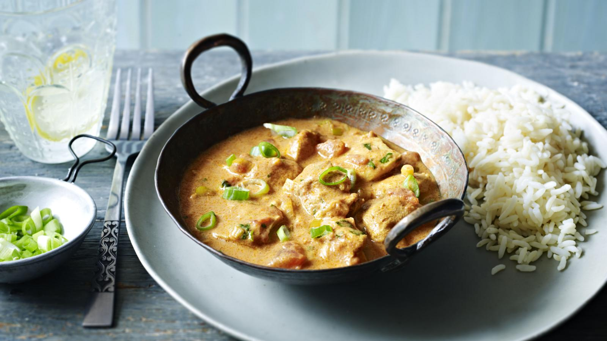

Easy chicken curry

This quick and easy chicken curry is creamy, full of flavour and takes less than half an hour!
Ingredients
- 6 spring onions
- 3 garlic cloves
- 2 tbsp vegetable oil
- half a 400g tin chopped tomatoes
- 2 tbsp curry powder
- 1 tsp ground ginger
- 400g boneless skinless chicken thigh, cut into 2.5cm pieces
- 100ml Greek-style natural yoghurt, plus extra to serve
- salt and pepper
Steps
- Thinly slice the spring onions, reserving a handful of the sliced green parts for garnish. Peel and chop the garlic. Heat the oil in a large saucepan over a medium heat and cook the spring onions and garlic for a few minutes. Add the tomatoes, curry powder and ground ginger and cook for 3-4 minutes. If the pan gets dry add a splash of water and make sure the spices don't burn.
- Add the chicken and cook for 5 minutes. Make sure all the chicken is coated and is beginning to brown on the sides.
- Add 250ml/9fl oz water and bring to the boil. Reduce to a medium to low heat and cook for 10-15 minutes, or until the chicken is cooked through with no sign of pink juices in the middle of the pieces.
- While the chicken is cooking, prepare the rice. Pour the rice into a saucepan and rinse it under the cold tap to take away any cloudy starch. Drain the cloudy water away. Add clean water for cooking the rice. You need almost twice as much water as rice. (If you use a mug of rice, add a little less than two mugs of water). Bring to the boil then reduce the heat to a low simmer. Cover with a lid and cook very gently for 10 minutes. Remove from the heat and leave to stand with the lid on for 10 minutes. This will finish cooking the rice. Keeping the lid on is important, so none of the steam escapes.
- Take the curry off the heat, stir in the yoghurt then season with salt and pepper. Serve the curry with the rice and garnish with a drizzle of yoghurt.